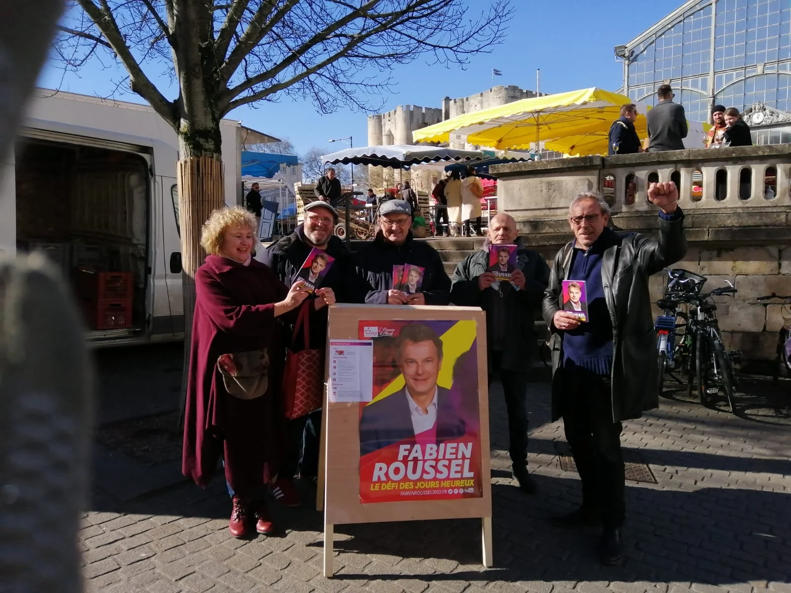

Compte rendu
Sur le marché de Niort avec le programme des Jours heureux
Date indiquée par Facebook · 14 février 2022
Repères éditoriaux
Le samedi précédant cette publication, nos camarades ont fait connaître sur le marché de Niort le programme des Jours heureux et la candidature de Fabien Roussel. Ils y ont reçu un très bon accueil.
Texte conservé avec la publication
Ce samedi, des camarades étaient présents sur le marché de Niort pour faire connaître le programme des "Jours Heureux" et notre candidat Fabien Roussel. Ils ont reçu un très bon accueil.
La France est infiniment plus riche qu'en 1945, préparons les Jours Heureux.

Sources
Archive rouge · export Facebook · AR-0002-FB-01964
À lire aussi · Fabien Roussel à Marseille. Redistribuer pour vivre et financer les services publics · Le lien d’origine